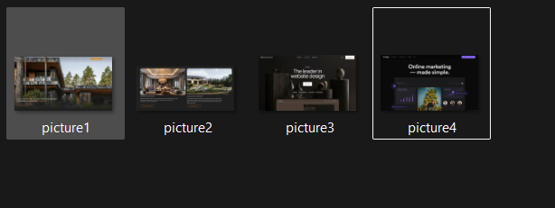

Цель: Разобрать ключевые этапы сражения 1380 года и понять роль духовного единства в победе над Золотой Ордой.
Текст экскурсовода: Здравствуйте. Мы находимся в зале воинской славы. Перед вами — поворотный момент русской истории, 1380 год. Московский князь Дмитрий Иванович решается на открытое неповиновение Золотой Орде...
Взгляните на этот образ. Перед битвой Дмитрий Донской отправляется в Троицкий монастырь. Сергий Радонежский благословляет князя и дает ему в помощь иноков-воинов Пересвета и Ослябю...

Битва началась 8 сентября с легендарного поединка. Русский богатырь Пересвет выехал против ордынца Челубея. Они ударили друг друга копьями одновременно...
В лесу (Зеленой дубраве) спрятался Засадный полк под командованием Боброка-Волынского. В решающий момент свежие силы ударили в тыл уставшим ордынцам...
Почему Дмитрий Донской приказал сжечь мосты (переправы) через Дон после того, как русское войско перешло на поле битвы?
Ответ: Это был психологический ход. Уничтожив переправу, князь показал воинам, что отступать некуда — позади только река и смерть. Оставалось либо победить, либо погибнуть.